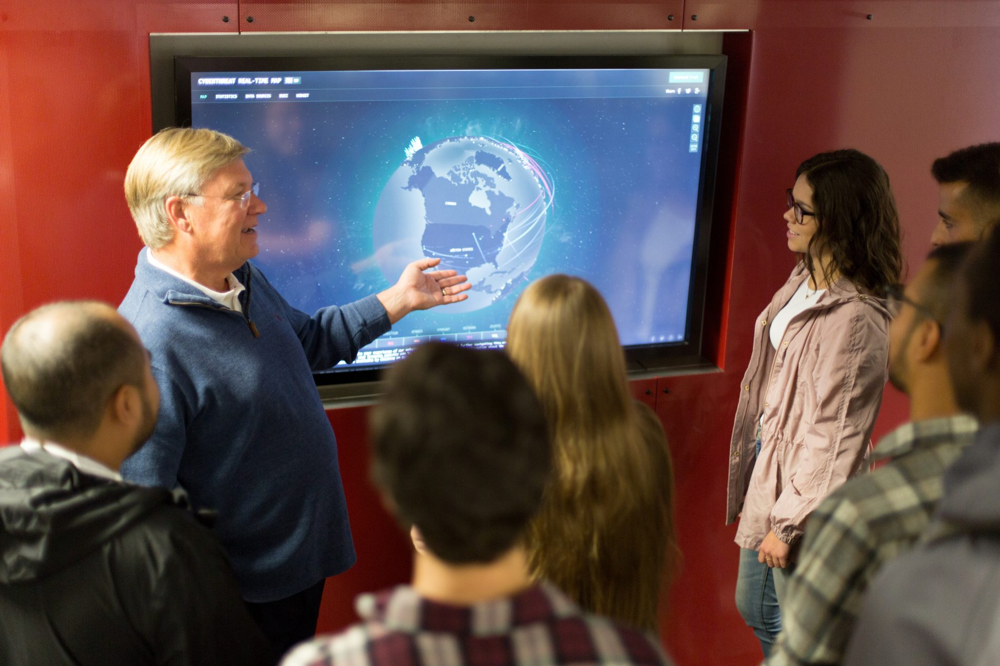

WANT TO LEARN
MORE ABOUT
COMPUTER
SCIENCE?
Navigate the challenging yet rewarding career path the Computer
Science field provides by analyzing the design, development,
software and hardware aspects of varying business, scientific and
social settings.

What is Computer Science?
What jobs can a CS major get? How much do they pay? Why is CS so important? Click the button below to learn these answers and more.
Computer Science at OC
Interested in learning more about Oklahoma Christian's computer science offerings? Click the button below to learn more.